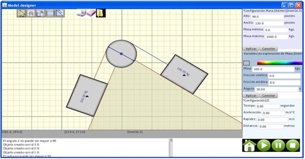

Julieta Noguez, Ph.D
Departamento de Tecnologías de Información y Computación
Cyberlearning
Desarrollo de un curso de Energía y Movimiento, de nivel Preparatoria en un ambiente virtual de aprendizaje que proporcione una interacción adaptativa con retroalimentación y retos personalizados, de acuerdo al desempeño y aprendizaje de los estudiantes (en colaboración con la Universidad Tec Virtual) Ganador de la Convocatoria Novus 2012
Un ambiente de autoría para facilitar la creación de simuladores para el aprendizaje activo de la Física.
